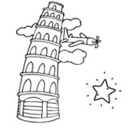

о нас
ИСТОРИЯ ВОЗНИКНОВЕНИЯ
У всех мам рано или поздно возникает вопрос выбора самого лучшего детского сада для своего ребенка, ведь пора выходить с декрета на работу. А что делать, если ты не можешь найти идеального места для ребенка, чтобы не думать о его безопасности и развитии? Открыть свой! Именно так начинается история частного детского сада «Дом Реджио».
История нашего детского сада – это история двух любящих мам, которые отдали все, чтобы создать уникальную территорию детского развития «Дом Реджио». Дети – реактивный двигатель, который и стал сердцем нового проекта, они уж очень быстро растут и требуют изменений всего вокруг.
Мы «воспитывались» вместе со своими детьми, очень разных по характеру, темпераменту и задаткам. Сколько удивительных открытий мы совершили вместе с ними, замечая, как легко дети учатся и развиваются, если на них не давить и как легко «закрываются», если мы пытаемся их «воспитывать» и ставим свои собственные педагогические амбиции. Мы долго искали сад, который смог бы поделиться своими наработками, идеями, новыми подходами и методиками. И вот в 2014 году мы нашли детский центр «Мама-хаус», который уже 5 лет воспитывал новое поколение детей. Наблюдая за счастливыми детьми, которых мы забирали после занятий, мы приняли решения открыть еще один «Мама-хаус», но на это раз не центр раннего развития, а полноценный сад вдали от городской суеты, с территорий, которая может развивать и давать неограниченные возможности.И, наверное, этот сад действительно очень нужен был родителям, ведь эта мечта стала реальностью уже 1 сентября 2015 года с открытием нового детского сада «Мама-хаус» на ул. Ливарская 1А Год был нелегким: старт проекта, комплектация групп, поиск талантливых, и самое главное, искренне разделяющих нашу философию развития ребенка педагогов, но мы выстояли и не остановились на достигнутом.
Путешествуя Италией летом 2015 г, мы открыли для себя новый подход в воспитании ребенка, который на 100% изменил курс нашего детского сада.
Это реджио-педагогика, уникальный подход в воспитании нового поколения, основная идея которого состоит в том, что ребенок самовыражается множеством способов, которые остаются не замеченными взрослыми; оригинальная организация деятельности каждого участника процесса, ведь тема работы определяется спонтанно, из вопросов и интересов детей, из догадок, случайно возникших в ходе детских разговоров. Именно этот этап стал фундаментом новой модели садика, который мы так долго искали.
СОВРЕМЕННОЕ ДОШКОЛЬНОЕ ВОСПИТАНИЕ
«Дом Реджио» - это территория счастливого детства, где роль взрослого – наблюдать, уважать выбор ребенка и создавать развивающую среду (взрослые сами являются ее немаловажной частью). «Сензитивные периоды», «зона ближайшего развития», «ведущая деятельность» и «индивидуальный подход» - это ключевые тезы любой программы дошкольного воспитания. Но вместе с тем, наши традиционные сады продолжают работать методами, которые уже неэффективные, используя прописанные конспекты, которые не развивают детский интерес к познанию и открытию нового. В каждом ребенке заложена естественная внутренняя потребность к саморазвитию, к освоению и осмыслению окружающего его мира. То, как взрослый удовлетворит эту жизненно важную потребность, зависит будущее растущей личности. Взрослый не должен заставлять. Его миссия – помогать, создавая развивающую среду и поддерживая атмосферу свободы выбора. Мы уверенны, что между уровнем успешности человека в жизни и полученными в дошкольный период знаниями и умениями является прямая связь. Мы уверенны, что между уровнем успешности человека в жизни и полученными в дошкольный период знаниями и умениями является прямая связь.

Получение так называемых навыков XXI века и привлечение ребенка к решению проблем в дошкольном возрасте обеспечат ему лучшее будущее. Такие результаты показало исследование, проведенное международным исследовательским центром Gallup по заказу образовательной программы «Партнерство в образовании» и неприбыльной организации Pearson Foundation. Полученные факты подтверждают наш вывод: современное обучение - именно то, в чем нуждаются современные дошкольники для успешной жизни в будущем.
РАЗВИТИЕ РЕБЕНКА

Главное условие позитивного развития ребенка - свобода выбора, которая помогает ему принимать новые развивающие ситуации. Для этого мы используем новые прогрессивные педагогические инструменты, которыми пользуются педагоги самых развитых систем мира. Цель нашего сада - обеспечить детей возможностью попасть в среду, где на них не влияют взрослые при осуществлении личного выбора - выбора в мелочах (что рисовать, как рисовать, чем рисовать), но при этом делать это сознательно и ответственно. Также в основе нашей программы развитие у ребенка навыков XXI века: творчество, критическое мышление и умение решать проблемы, коммуникативные навыки и навыки сотрудничества, навыки работать с информацией, а также жизненные навыки: гибкость, инициативность, социальные навыки, лидерство и ответственность.
Также в основе нашей программы развитие у ребенка навыков XXI века: творчество, критическое мышление и умение решать проблемы, коммуникативные навыки и навыки сотрудничества, навыки работать с информацией, а также жизненные навыки: гибкость, инициативность, социальные навыки, лидерство и ответственность. Развитие навыков XXI века у детей дошкольного возраста предоставит им вдвое больше шансов достичь успеха в жизни по сравнению с теми, кто имеет низкий уровень подобных умений. Мы построили нашу программу на уверенности в том, что: - каждый ребенок уникален и заслуживает уважения; - каждый ребенок контролирует свое обучение и развитие; - каждый ребенок может выбрать свою траекторию развития; - каждый ребенок может сознательно и самостоятельно строить отношения с другими детьми и взрослыми; - каждый ребенок может найти свои уникальные пути и способы заявить о себе (драматизация, музыка, пение, фотография, танцы, конструирование, беседа и др.) лого – прежде всего, наблюдать, создавать и поддерживать развивающую среду, работать с мотивацией каждого ребенка
НАША СЕМЬЯ
Наша группа - это сообщество детей в возрасте от 1,8 до 6 лет и взрослых, объединенных общей задачей развития. Роль взрослого – прежде всего, наблюдать, создавать и поддерживать развивающую среду, работать с мотивацией каждого ребенка в отдельности и группы в целом. Наш опыт подтверждает, что спонтанность и свобода выбора для ребенка являются необходимым фактором развития и личностного роста. Каждый ребенок наблюдает и «впитывает» модель поведения взрослых в разных ситуациях, вот поэтому, у нас нет «персонала», нет случайных людей. Наша команда – это команда единомышленников-профессионалов, которые четко знают, как сделать ребенка успешным. «Дом Реджио» – это семья, которая объединяет детей, родителей и педагогов, ведь только вместе можно достигнуть настоящего результата. Наша команда, как и наши дети, открыты ко всему новому и неизведанному, мы каждый день открываем вместе новые горизонты развития, чтобы воспитать новое счастливое и успешное поколений детей.